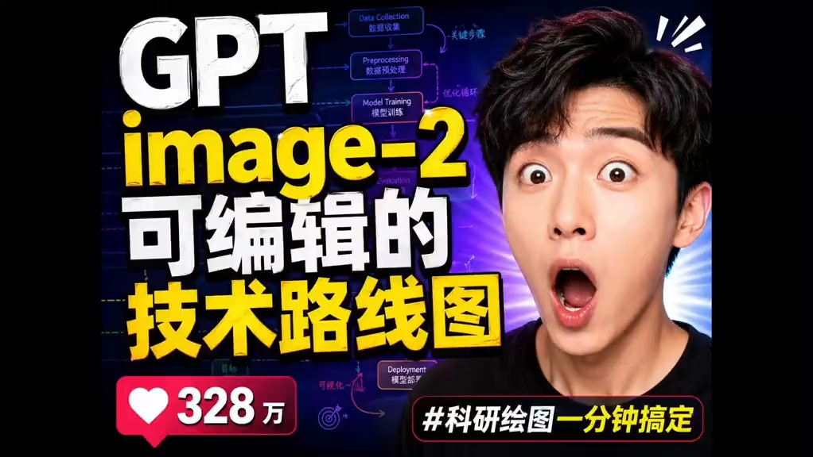

Facebook Reels｜GeminiAi：GPT image-2 可編輯科研技術路線圖

一句話摘要
GeminiAi 這則 Reels 主打用 GPT image-2 生成「可編輯的科研技術路線圖」，反映 AI 生圖工具正被包裝成研究生／科研工作者的論文圖表與流程圖產生器。
為什麼保存
這則內容延續之前保存過的「Gemini + GPT 科研繪圖」線索，重點從一般科研配圖，轉向更具體的「技術路線圖」。
對研究生、論文寫作、課程教材與技術簡報來說，技術路線圖是高頻需求：要把資料收集、前處理、模型訓練、部署、評估或實驗流程變成可讀圖表。若 AI 能生成且可編輯，會直接降低論文圖與簡報圖的製作成本。
Facebook Reels 可見資訊
- 作者：GeminiAi
- 影片文字：`终于知道大人常说的我们当年哪有这条件,最新的gpt-image2 生图模型用来做科研绘图简直强到离谱,今天分享可编辑的技术路线图`
- Hashtags：`#ChatGPT`、`#科研绘图`、`#研究生`、`#科研`、`#ai绘图`
- 可見互動數：5,688 次觀看、29 個心情、1 則留言、19 次分享
- Reel ID：`1561293068805289`
縮圖觀察
縮圖主要文字：
- `GPT image-2`
- `可编辑的 技术路线图`
- `#科研绘图 一分钟搞定`
- 左下角另有心形數字：`328万`
背景是一張技術流程圖，節點可見：
- Data Collection / 數據收集
- Preprocessing / 數據預處理
- Model Training / 模型訓練
- Deployment / 模型部署
右側是一位做出驚訝表情的男子，整體是典型短影音封面風格：大字、強對比、誇張表情、科研流程圖作背景。
實務判讀
這類「AI 科研繪圖」內容真正有用的地方，不是一次生成漂亮圖片，而是能否產出：
- **結構正確**：流程順序、箭頭方向、模組關係不能亂。
- **可編輯**：最好能輸出 SVG、PPTX、draw.io、Excalidraw 或可分層圖片，而不是只能截圖。
- **符合論文風格**：配色、字體、留白、註解與標籤需適合期刊或簡報。
- **可重複修改**：研究流程常迭代，不能每改一次就整張重畫。
如果 GPT image-2 能生成初版，再交給可編輯工具修正，會比純手工畫圖快很多。
對欒帥的應用方向
這則可延伸到幾個實用方向：
- 為課程教材生成研究流程圖。
- 把論文方法章節轉成技術路線圖。
- 將 AI Agent / Hermes 工作流視覺化成流程圖。
- 產生簡報中的「方法架構」「系統架構」「實驗流程」圖。
- 搭配 Excalidraw、PowerPoint、Mermaid 或 SVG 工作流，保留可編輯性。
風險與限制
- Reels 標題宣稱「一分鐘搞定」，但實際可用性需看是否真的可編輯、是否能匯出原始圖層。
- AI 生成科研流程圖容易出現錯字、箭頭錯向、流程節點不合理或術語混亂。
- 若用於論文投稿，仍需人工審查內容準確性與期刊圖表規範。
- `gpt-image2` 的命名、可用入口與實際模型能力需再以 OpenAI / ChatGPT 官方資訊查核。